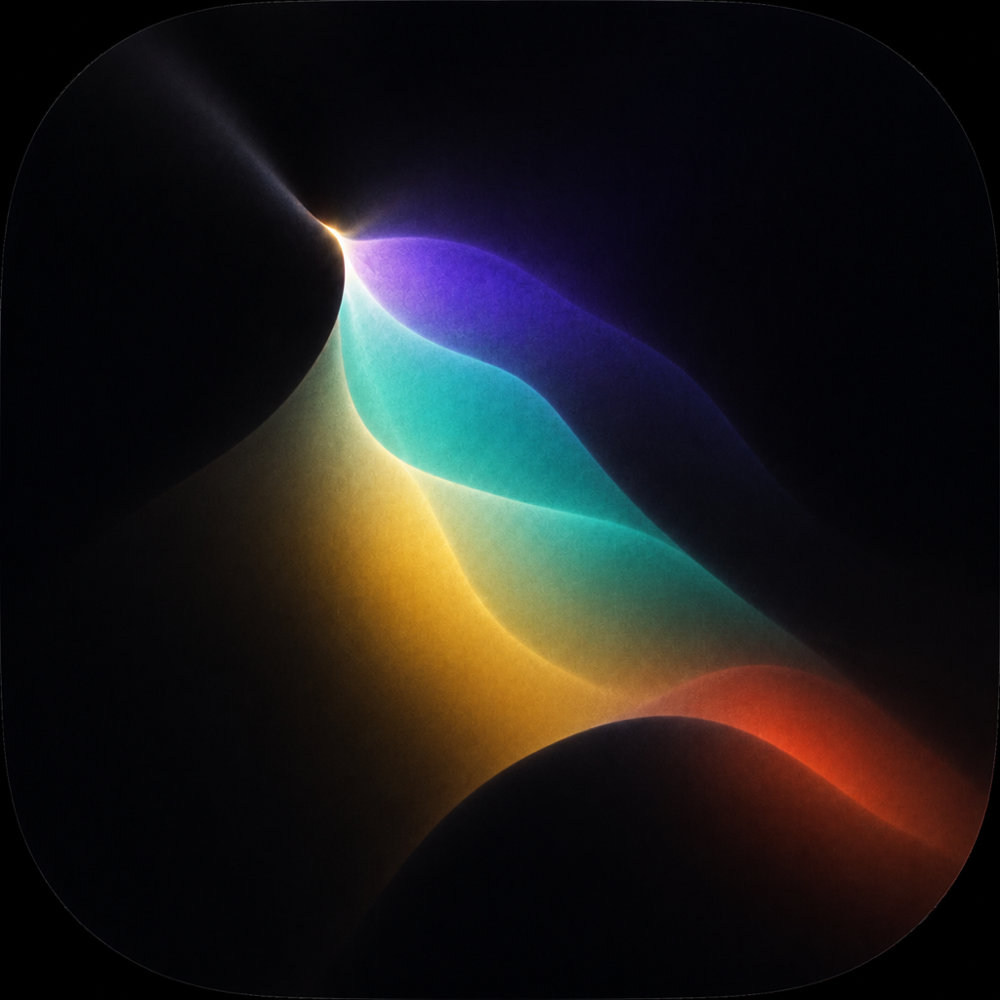
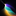
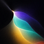

First Opening
Two shadows nearly meet. A tiny opening admits prismatic light. The app icon keeps the full optical composition; the favicon uses an art-directed crop of that same artwork.

Uzume
oo-zoo-meh
Favicon crop

1632

64Dock
What people rememberA tiny break in darkness releasing color.
Honest riskThe favicon depends on a crop rather than the full composition.